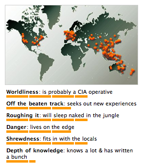

Mon, 30 Aug 2010 08:08:03 ·
my wanderlust profile according to travel brain

My Wanderlust Profile According to Travel Brain ~ I like the part where they said, I’m probably a CIA Operative… pssstt…!
Mon, 30 Aug 2010 08:08:03 ·

My Wanderlust Profile According to Travel Brain ~ I like the part where they said, I’m probably a CIA Operative… pssstt…!